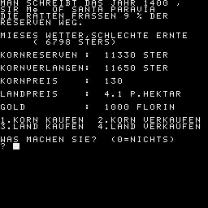
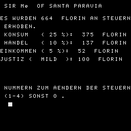

Könnte die Urversion sein. Gleich mit [5c469a2bd39c04926c9f00e465f632a2],
einige Texte wurde dort angepasst.
1060 JAHR = 1400
1070 FOR M=0 TO 7:READ TB$(M):NEXT
1080 DATA SIR,BARON,COUNT,MARQUIS,DUKE,GRAND DUKE,PRINCE,KING
1090 DATA "SANTA PARAVIA","FIBONACCIO","TORRICELLA","MOLINETTO","FONTA"
1100 DATA "MARINETTO"
1110 WINDOW:CLS:INPUT "WIEVIELE PERSONEN WOLLEN SPIELEN(1-6)";SA:PRINT:PRINT
1120 IF SA<1 OR SA>6 THEN 1110
1130 FOR SP=1 TO SA:READ T$
1140 PRINT "WER IST DER BEHERRSCHER VON"
1150 PRINT T$:INPUT N$
1160 PRINT "WOLLEN SIE '" T$"'":PRINT "UMBENNEN":U$="":INPUT U$:PRINT:PRINT
1170 N$(SP)=" "+N$+" OF "+U$:IF U$="" THEN N$(SP)=N$(SP)+T$
1180 S1(SP)=25:S2(SP)=10:S3(SP)=5:JU(SP)=2
1190 GD(SP)=1000:LA(SP)=10000:KO(SP)=5000
1200 LS(SP)=100:VO(SP)=2000
1210 AD(SP)=4:SO(SP)=30:GE(SP)=5:KA(SP)=25
1220 NEXT
1230 PRINT "SPIELSTAERKE :"
1240 PRINT "1.ANFAENGER 3.MEISTER "
1250 PRINT "2.MIT ERFAHRUNG 4.KOENNER":PRINT "5-8 WAHNSINN":PRINT:PRINT
1260 PRINT "SPIELSTAERKE :":INPUT S$:PRINT
1270 SS=VAL(S$):IF SS=0 OR S$=""OR SS>8 THEN 1260
1280 SS=SS+4:TJ(0)=1:N$(0)=" PEPPONE OF MONTERANE"
1290 FOR SP=1 TO SA:SU(SP)=INT(1413+SS*1.5+RND(1)*26+RND(1)*10):NEXT
1300 REM
1310 FOR SP=1 TO SA:IF SU(SP)<JA THEN 1390
1320 IF SU(SP)=JA THEN 1400
1330 IF VO(SP)<200 THEN SU(SP)=JA:GOTO 1400
1340 WINDOW:CLS:GOSUB 1740
1350 GOSUB 2140
1360 WINDOW:CLS:GOSUB 2740
1370 WINDOW:CLS:GOSUB 3390
1380 GOSUB 4010
1390 NEXT:JA=JA+1:GOTO 1300
1400 PRINT:IF VO(SP)<200 THEN 1410
1410 PRINT " HURRA!!";TB$(TJ(SP));N$(SP)
1420 PRINT " WURDE ERMORDET":GOTO 1440
1430 PRINT " WIR TRAUERN UM";TB$(TJ(SP));NA$(SP)
1440 PRINT " GEB.1381,GEST.";JA
1450 H$=" SIE":IF TJ(SP)<8 THEN H$=" ER"
1460 PRINT H$;" STARB
1470 IF VO(SP)>200 THEN 1500
1480 PRINT " NACH LANGJAEHRIGER TYRANNEI"
1490 PRINT " DURCH EIN ATTENTAT!":GOTO 1610
1500 IF JA<1449 THEN 1530
1510 PRINT " IN HOHEM ALTER NACH EINER"
1520 PRINT " LANGEN HERRSCHAFT":GOTO 1610
1530 ON(RND(1)*5)GOTO 1560,1570,1580,1600,1610
1540 PRINT " AN EINER GRIPPE,WAEHREND EINES"
1550 PRINT " EISIGEN WINTERS":GOTO 1610
1560 PRINT " WAEHREND EINER POCKEN-EPEDEMIE.":GOTO 1610
1570 PRINT " DURCH VERSEUCHTES WASSER AN TYPHUS.":GOTO 1610
1580 PRINT " NACH EINEM RAUBUEBERFALL WAEHREND"
1590 PRINT " EINER REISE.":GOTO 1610
1600 PRINT " DURCH VERGIFTETES FLEISCH."
1610 INPUT Q$:IF Q$=""THEN 1620:GOTO 1610
1620 GOSUB 4300
1630 VS=VS+1:IF VS<SA THEN 1390
1640 PRINT "_";" DAS SPIEL IST LEIDER ZU ENDE,":PRINT:PRINT "DA ALLE"
1650 PRINT " "
1660 PRINT " TEILNEHMER DER TOD EREILT HAT."
1670 PRINT " "
1680 PRINT " "
1690 PRINT " ICH HABE EUCH ALLE UEBERLEBT."
1700 PRINT " "
1710 PRINT " "
1720 PRINT TB$(1);N$(0)
1730 INPUT Q$:IF Q$<>""THEN GOSUB 4300
1731 END
1740 Z=RND(1)*30:KO(SP)=INT(KO(SP)*(100-Z)/100):RV=INT(Z)
1750 WE=(INT(RND(1)*5)+INT(RND(1)*6)+2)/2
1760 H=LA(SP):M=(VO(SP)-100*MU(SP))*5:IF M<0 THEN M=0
1770 IF M<H THEN H=M
1780 M=KO(SP):IF M<H THEN H=M
1790 ER=H*(WE-.5):KO(SP)=KO(SP)+ER
1800 GOSUB 4180:FLAG=0
1810 IF ERNTE<1 THEN Z=2:GOTO 1840
1820 Z=VE*1/ER:IF Z>2 THEN Z=2
1830 IF Z<.8 THEN Z=.8
1840 LP=INT((3*WE+INT(RND(1)*6)+INT(RND(1)*6)+12)*Z)
1850 KP=INT((20-WE*3+INT(RND(1)*5)+INT(RND(1)*5))*4*Z)
1860 WINDOW:PRINT "MAN SCHREIBT DAS JAHR";JA;","
1870 PRINT TB$(TJ(SP));N$(SP)
1880 IF FLAG>0 THEN 1920:FLAG=1
1890 PRINT "DIE RATTEN FRASSEN";RV;"% DER":PRINT "RESERVEN WEG.":PRINT
1900 ON WE GOSUB 4190,4200,4210,4220,4230
1910 PRINT " (";ER;"STERS)":PRINT
1920 PRINT "KORNRESERVEN : ";KO(SP);"STER "
1930 PRINT "KORNVERLANGEN: ";VE;"STER "
1940 PRINT "KORNPREIS : ";KP:PRINT
1950 PRINT "LANDPREIS : ";LP*.1;"P.HEKTAR":PRINT
1960 PRINT "GOLD : ";GD(SP);"FLORIN "
1970 PRINT "1.KORN KAUFEN 2.KORN VERKAUFEN"
1980 PRINT "3.LAND KAUFEN 4.LAND VERKAUFEN"
1990 WINDOW 21,31,0,31:CLS
2000 PRINT "WAS MACHEN SIE? (0=NICHTS)":INPUT IN
2010 IF IN<0 OR IN>4 THEN 2000
2020 PRINT
2030 IF IN>0 THEN ON IN GOSUB 4720,4750,4790,4820:GOTO 1860
2040 PRINT "WIEVIEL KORN VERTEILEN SIE AN IHRE"
2050 INPUT "UNTERTANEN";GG
2060 FLAG=FLAG+1:IF FLAG=2 AND GG=0 THEN 1860
2070 IF GG<KO(SP)*.2 THEN GOSUB 2100:GOTO 2040
2080 IF GG>KO(SP)*.8 THEN GOSUB 2120:GOTO 2040
2090 KO(SP)=KO(SP)-GG:RETURN
2100 PRINT "SIE MUESSEN MINDESTENS 20% DES"
2110 PRINT "KORNS VERTEILEN!":RETURN
2120 PRINT "SIE MUESSEN MINDESTENS 20% DES"
2130 PRINT "KORNS ALS NOTRESERVE BEHALTEN!":RETURN
2140 WINDOW:CLS
2150 IF VE>GG THEN 2450
2160 GR=6:SR=2:GOSUB 4860
2170 IF S1(SP)+S2(SP)<35 THEN KA(SP)=INT(KA(SP)+1+RND(1)*4)
2180 IF S3(SP)<RND(1)*20+1 THEN GOSUB 2730
2190 IF VE*1.3>GG THEN 2260
2200 H=VO(SP)/1000:Z=10*(GG-VE)/GG
2210 H=Z*H*(1+RND(1)*25)+1+RND(1)*40:H=RND(1)*H+2:VO(SP)=INT(VO(SP)+H)
2220 PRINT
2230 PRINT INT(H);"MENSCHEN SIND ZUGEWANDERT."
2240 H=RND(1)*(H/5)+1:IF H>50 THEN H=50
2250 KA(SP)=KA(SP)+H:AD(SP)=AD(SP)+1:GE(SP)=GE(SP)+3
2260 PRINT
2270 H=MA(SP)*75:IF H>0 THEN GD(SP)=GD(SP)+H
2280 PRINT " IHR MARKT BRACHTE ";H;"FLORIN"
2290 PRINT " AN ZOLL EIN."
2300 H=MU(SP)*INT(60+RND(1)*460):IF H>0 THEN GD(SP)=GD(SP)+H
2310 PRINT
2320 PRINT " IHRE MUEHLE MACHTE EINEN GEWINN "
2330 PRINT "VON";H;"FLORIN."
2340 PRINT
2350 H=SO(SP)*3:GD(SP)=GD(SP)-H:PRINT " SIE ZAHLTEN IHREN SOLDATEN";H;"F"
2360 PRINT " ALS SOLD."
2370 PRINT
2380 IF LA(SP)/320-20>SO(SP) THEN 2480
2390 IF LA(SP)/250-20>SO(SP) THEN 2420
2400 FOR M=1 TO SA:IF M<>SP AND SO(SP)<SO(M)/1.4 THEN 2480
2410 NEXT
2420 PRINT " "
2430 INPUT " ";I$:IF I$="" OR I$<>"" THEN RETURN
2440 GOTO 2430
2450 H=(VE-GG)*100/VE-9:IF H>65 THEN H=65
2460 IF H<0 THEN H=0
2470 GR=2:SR=H+7:GOSUB 4860:GOTO 2260
2480 REM
2490 AG=0
2500 FOR M=1 TO SA:IF SP=M THEN 2520
2510 IF SO(M)>SO(SP) AND SO(M)>LA(M)/400 AND SO(M)=>SO(AG) THEN AG=M
2520 NEXT:IF AG>0 THEN LV=(SO(AG)*200+LA(SP)/4)*(0.3+RND(1)*0.4):GOTO 2540
2530 LV=1000*RN(1)*9000:IF LA(SP)>30000 THEN LV=LV+RND(1)*(LA(SP)-300005)
2540 IF LV>LA(SP)-5000 THEN LV=LA(SP)/2-2500
2550 IF LV<2 THEN 2420
2560 LA(AG)=LA(AG)+LV:LA(SP)=LA(SP)-LV
2570 H=RND(1)*40+2:IF H>SO(SP)-15 THEN H=SO(SP)-15
2580 SO(SP)=SO(SP)-H
2590 PRINT
2600 PRINT "ALARM !!!!!"
2610 PRINT
2620 PRINT TB$(TJ(AG));N$(AG);" GREIFT AN"
2630 PAUSE 50
2640 PRINT "DIE SCHLACHT GING LEIDER VERLOREN ..."
2650 PRINT
2660 PRINT "ES GAB ";LV;" HEKTAR LAND UND"
2670 PRINT
2680 PRINT " ";INT(H);"SOLDATEN VERLUST
2690 PRINT
2700 PRINT "ERHOEHEN SIE IHRE"
2710 PRINT "VERTEIDIGUNGSFAEHIGKEIT !!!"
2720 FOR M=1 TO 2000:NEXT:GOTO 2420
2730 AD(SP)=INT(AD(SP)+RND(1)*2):GE(SP)=INT(GE(SP)+RND(1)*3):RETURN
2740 OD=TJ(SP)/8-INT(TJ(SP)/8):OD=OD*8
2750 SN=(JU(SP)*300-500)*(OD+1)
2760 Z=(150-S1(SP)-S2(SP)-S3(SP))/100:IF Z<1^E-2 THEN Z=1^E-2
2770 A1=INT(((AD(SP)*100+GE(SP)*75+KA(SP)*20)*Z+LS(SP))*S1(SP)/100)
2780 A2=INT(((AD(SP)*50+KA(SP)*25+LS(SP)*0.1)*Z*(5-JU(SP)))*S2(SP)/200)
2790 A3=INT((AD(SP)*250+LS(SP)/5+10*JU(SP)*Z)*S3(SP)/100)
2800 WINDOW
2810 PRINT
2820 PRINT " ";TB$(TJ(SP));N$(SP)
2830 PRINT
2840 PRINT
2850 PRINT "ES WURDEN";A1+A2+A3+SN;" FLORIN AN STEUERN"
2860 PRINT " ERHOBEN."
2870 PRINT
2880 PRINT " KONSUM (";S1(SP);"%): ";A1;" FLORIN"
2890 PRINT
2900 PRINT " HANDEL (";S2(SP);"%): ";A2;" FLORIN"
2910 PRINT
2920 PRINT "EINKOMMEN (";S3(SP);"%): ";A3;" FLORIN"
2930 PRINT
2940 ON JU(SP)GOSUB 4240,4250,4260,4270
2950 PRINT
2960 WINDOW 21,31,0,31:CLS
2970 PRINT " NUMMERN ZUM AENDERN DER STEUERN"
2980 PRINT " (1-4) SONST 0 ."
2990 PRINT
3000 INPUT " ";I$:IF I$="" THEN 3000
3010 IF VAL(I$)=0 AND I$<>"0"THEN 3000
3020 IN=VAL(I$):IF IN>4 THEN 3000
3030 IF IN>0 THEN ON IN GOTO 3240,3270,3300,3330
3040 GD(SP)=GD(SP)+A1+A2+A3+SN
3050 IF GD(SP)<0 THEN GD(SP)=GD(SP)*1.5
3060 IF GD(SP)+2000+OD*1500=>0 THEN RETURN
3070 WINDOW:CLS:PRINT
3080 PRINT " "; TB$(TJ(SP));N$(SP);" !!!"
3090 PRINT
3100 PRINT
3110 PRINT " DURCH IHRE TOTALE MISSWIRTSCHAFT SIND"
3120 PRINT
3130 PRINT " SIE JETZT BANKROTT !!!"
3140 PRINT
3150 PRINT
3160 PRINT " IHR VERMOEGEN WURDE ENTEIGNET"
3170 PRINT
3180 PRINT " UND VERSTEIGERT !!!"
3190 MA(SP)=0:MU(SP)=O:PT(SP)=0:KT(SP)=0
3200 GOSUB 4180 IF KO(SP)>2*VE THEN KO(SP)=2*VE
3210 LA(SP)=6000:GD(SP)=100:LS(SP)=100
3220 INPUT I$:IF I$="" THEN 3220
3230 RETURN
3240 INPUT " NEUE KONSUMSTEUER (0-100)";H
3250 IF H<0 OR H>100 THEN H=25
3260 S1(SP)=H:GOTO 2740
3270 INPUT " NEUE HANDELSSTEUER (0-50)";H
3280 IF H<0 OR H>50 THEN H=10
3290 S2(SP)=H:GOTO 2740
3300 INPUT " NEUE EINKOMMENSTEUER (0-25)";H
3310 IF H<0 OR H>25 THEN H=5
3320 S3(SP)=H:GOTO 2740
3330 PRINT " 1. SEHR FAIR 2. MILD
3340 PRINT " 3. STRENG 4. ABSCHEULICH"
3350 PRINT " "
3360 INPUT " WELCHE JUSTIZ PRAKTIZIEREN SIE";H
3370 IF H<0 OR H>4 THEN 2740
3380 JU(SP)=H:GOTO 2740
3390 WINDOW
3400 PRINT " STAATLICHE INVESTITIONEN VON"
3410 PRINT
3420 PRINT " ";TB$(TJ(SP));N$(SP)
3430 PRINT
3440 H$="00 GOLDFLORIN"
3450 PRINT
3460 PRINT " 1.MARKTPLATZ :10";H$
3470 PRINT " 2.KORNMUEHLE :20";H$
3480 PRINT " 3.PALAST :30";H$
3490 PRINT " 4.KATHEDRALE :50";H$
3500 PRINT " 5.SOLDATEN : 5";H$
3510 PRINT
3520 PRINT
3530 IF GD(SP)<0 THEN 3550
3540 GOTO 3570
3550 PRINT " SIE HABEN BEREITS ";-GD(SP);" "
3560 PRINT " FLORIN SCHULDEN!!!":GOTO 3590
3570 PRINT " IN DER SCHATZKAMMER LIEGEN "
3580 PRINT " ";GD(SP);" FLORIN."
3590 PRINT
3600 PRINT " WEITERE EINGABEN:"
3610 PRINT " 8. JAHRESENDE
3620 PRINT " 6. VERGLEICH DER VOELKER"
3630 PRINT " 7. VERGLEICH DER BESITZTUEMER"
3640 WINDOW 24,31,0,31:CLS
3650 INPUT " IHRE WAHL";I$
3660 IF I$="" THEN 3650
3670 IN=VAL(I$):IF IN>8 OR IN<1 THEN 3650
3680 M=GD(SP)+3500+2800*OD:IF IN=8 THEN RETURN
3690 ON IN GOSUB 3700,3760,3800,3860,3920,4300,4510:GOTO 3390
3700 PRINT " WIEVIELE MARKTPLAETZE WOLLEN"
3710 INPUT " SIE KAUFEN";H
3720 IF H<1 THEN RETURN
3730 IF M<H*1000 THEN 3970
3740 MA(SP)=MA(SP)+H:GD(SP)=GD(SP)-H*1000
3750 LS(SP)=INT(LS(SP)+H*10):KA(SP)=INT(KA(SP)+H*5):RETURN
3760 INPUT " WIEVIELE MUEHLEN WOLLEN SIE KAUFEN";H
3770 IF H<1 THEN RETURN
3780 IF M<H*2000 THEN 3970
3790 MU(SP)=MU(SP)+H:GD(SP)=GD(SP)-H*2000:LS(SP)=INT(LS(SP)+H*25):RETURN
3800 PRINT " UM WIEVIELE TEILE WOLLEN SIE DEN"
3810 INPUT " PALAST WEITERBAUEN";H
3820 IF H<1 THEN RETURN
3830 IF M<H*3000 THEN 3970
3840 PT(SP)=PT(SP)+H:GD(SP)=GD(SP)-H*3000:LS(SP)=INT(LS(SP)+H*50)
3850 FOR M=1 TO H:AD(SP)=AD(SP)+1+(INT(RND(1)*2)):NEXT M:RETURN
3860 PRINT " WIEVIELE TEILE WOLLEN SIE DIE"
3870 INPUT " KATHEDRALE WEITERBAUEN";H
3880 IF H<1 THEN RETURN
3890 IF M<H*5000 THEN 3970
3900 KT(SP)=KT(SP)+H:GD(SP)=GD(SP)-H*5000:LS(SP)=INT(LS(SP)+H*100)
3910 FOR M=1 TO H:GE(SP)=GE(SP)+1+INT(RND(1)*6):NEXT:RETURN
3920 PRINT " WIEVIELE EINHEITEN WOLLEN SIE"
3930 INPUT " REKRUTIEREN";H
3940 IF H<1 OR H*20>VO(SP) THEN RETURN
3950 IF M<H*500 THEN 3970
3960 SO(SP)=SO(SP)+H*20:VO(SP)=VO(SP)-H*20:GD(SP)=GD(SP)-H*500:RETURN
3970 PRINT
3980 PRINT " FUER SO HOHE AUSGABEN KRIEGEN SIE"
3990 PRINT " KEINEN KREDIT MEHR !!!"
4000 INPUT I$:IF I$<>"" OR I$="" THEN RETURN
4010 REM
4020 SU=0:M=MA(SP):GOSUB 4280
4030 M=MU(SP):GOSUB 4280:M=PT(SP):GOSUB 4280:M=KT(SP):GOSUB 4280
4040 M=GD(SP)/1000:GOSUB 4280:M=AD(SP)/5:GOSUB 4280
4050 M=KA(SP)/50:GOSUB 4280:M=AD(SP)/5:GOSUB 4280
4060 M=SO(SP)/50:GOSUB 4280:M=GE(SP)/10:GOSUB 4280
4070 M=VO(SP)/2000:GOSUB 4280:M=LS(SP)/500:GOSUB 4280
4080 TJ=SU/SS-JU(SP)-1:IF TJ>7 THEN TJ=7
4090 IF JA+2=SJ(SP) THEN TJ(SP)=TJ(SP)+1
4100 IF TJ>TJ(SP) AND 7 THEN TJ(SP)=TJ(SP) AND 8 OR TJ
4110 IF(TJ(SP) AND 7)<7 THEN RETURN
4120 WINDOW:CLS:PRINT:PRINT:PRINT:PRINT
4130 PRINT " DAS SPIEL IST ZU ENDE!!"
4140 PRINT:PRINT
4150 PRINT " ES LEBE KING ";N$(SP)
4160 FOR Q9=1 TO 4000:NEXT
4170 GOSUB 4300:GOSUB 4510:END
4180 VE=AD(SP)*100+GE(SP)*40+KA(SP)*30+SO(SP)*10+VO(SP)*5:RETURN
4190 PRINT "DUERRE,HUNGERSNOT DROHT":RETURN
4200 PRINT "MIESES WETTER,SCHLECHTE ERNTE":RETURN
4210 PRINT "NORMALES WETTER,MITTLERE ERNTE":RETURN
4220 PRINT "GUTES WETTER,SCHOENE ERNTE":RETURN
4230 PRINT "EXCELLENTES WETTER,GROSSE ERNTE":RETURN
4240 PRINT "JUSTIZ (SEHR FAIR):";SN;" FLORIN":RETURN
4250 PRINT "JUSTIZ ( MILD ):";SN;" FLORIN":RETURN
4260 PRINT "JUSTIZ ( STRENG ): ";SN;" FLORIN":RETURN
4270 PRINT "JUSTIZ(ABSCHEULICH):";SN;" FLORIN":RETURN
4280 SU=SU+M:IF M>10 THEN SU=SU-M+10
4290 RETURN
4300 WINDOW:CLS
4310 A=0
4320 FOR M=1 TO SA
4330 A=A+1
4340 PRINT A;". ";TB$(TJ(M));N$(M)
4350 NEXT
4360 PRINT
4370 PRINT TAB(3)"LAND";TAB(15)"GOLD";TAB(23)"SOLDATEN"
4380 A=0
4390 FOR M=1 TO SA
4400 A=A+1
4410 PRINT A;". ";TAB(3)LA(M);TAB(15)GD(M);TAB(27)INT(SO(M))
4420 NEXT
4430 PRINT
4440 PRINT TAB(3)"ADEL";TAB(9)"KLERUS";TAB(18)"HAENDLER";TAB(27)"VOLK"
4450 A=0
4460 FOR M=1 TO SA
4470 A=A+1
4480 PRINT A;". ";TAB(3)INT(AD(M));TAB(12)GE(M);TAB(21)INT(KA(M));TAB(5)INT(VO(M))
4490 NEXT
4500 INPUT I$:WINDOW:CLS:RETURN
4510 WINDOW:CLS
4520 PRINT " EIGENTUM DER HERSCHAFTSHAEUSER"
4530 A=0
4540 FOR M=1 TO SA
4550 A=A+1
4560 PRINT A;". ";TB$(TJ(M));N$(M)
4570 NEXT
4580 PRINT "
4590 PRINT TAB(3)"LAND";TAB(14)"GOLD";TAB(25)"MAERKTE"
4600 A=0
4610 FOR M=1 TO SA
4620 A=A+1
4630 PRINT A;". ";TAB(3)LA(M);TAB(15)GD(M);TAB(27)MA(M)
4640 NEXT
4650 PRINT
4660 PRINT TAB(3)"MUEHLEN";TAB(13)"PALAST";TAB(21)"KATHEDRALE"
4670 A=0
4680 FOR M=1 TO SA
4690 A=A+1
4700 PRINT A;". ";TAB(3)MU(M);TAB(15)PT(M);TAB(27)KT(M)
4710 NEXT:INPUT I$:WINDOW:CLS:RETURN
4720 INPUT "WIEVIEL KORN WOLLEN SIE KAUFEN";H
4730 IF H<1 THEN RETURN
4740 GD(SP)=GD(SP)-H*KP/1000:KO(SP)=KO(SP)+H:RETURN
4750 INPUT "WIEVIEL KORN WOLLEN SIE VERKAUFEN";H
4760 IF H<1 THEN RETURN
4770 IF KO(SP)-H<VE(SP)/4 THEN PRINT "SIE WOLLEN WOHL EINE REVOLUTION":G0 TO 8350
4780 GD(SP)=GD(SP)+H*KP/1000:KO(SP)=KO(SP)-H:RETURN
4790 INPUT "WIEVIEL LAND WOLLEN SIE KAUFEN";H
4800 IF H<1 THEN RETURN
4810 GD(SP)=GD(SP)-H*LP/10:LA(SP)=LA(SP)+H:RETURN
4820 INPUT "WIEVIEL LAND WOLLEN SIE VERKAUFEN";H
4830 IF H<1 THEN RETURN
4840 IF LA(SP)-H<5000 THEN PRINT "SOVIEL LAND KOENNEN SIE NICHT VERKAUFEN!":GOTO 4820
4850 GD(SP)=GD(SP)+H*LP/10:LA(SP)=LA(SP)-H:RETURN
4860 H=INT((RND(1)*GR+1)*VO(SP)/100+2):VO(SP)=VO(SP)+H
4870 PRINT INT(H);"MENSCHEN WURDEN DIESES JAHR GEBOREN"
4880 PRINT
4890 H=INT((RND(1)*SR)*VO(SP)/100+2):VO(SP)=VO(SP)-H
4900 PRINT INT(H);"MENSCHEN STARBEN DIESES JAHR."
4910 IF JU(SP)<3 THEN RETURN
4920 H=INT((JU(SP)-2)^2*(2+RND(1))*VO(SP)/180+2):VO(SP)=VO(SP)-H
4930 PRINT
4940 PRINT INT(H);"MENSCHEN FLOHEN VOR DER"
4950 PRINT " ABSCHEULICHEN JUSTIZ."
4960 RETURN
4970 CLS:PRINT
4980 PRINT " ANDREAS GRIMM PRESENTS"
4990 PRINT
5000 PRINT " SANTA PARAVIA"
5010 PRINT
5020 PRINT " IN EINER UEBERARBEITUNG FUER"
5030 PRINT
5040 PRINT " robotron Z9001"
5050 PRINT
5060 PRINT " VON BERND SCHINDLER"